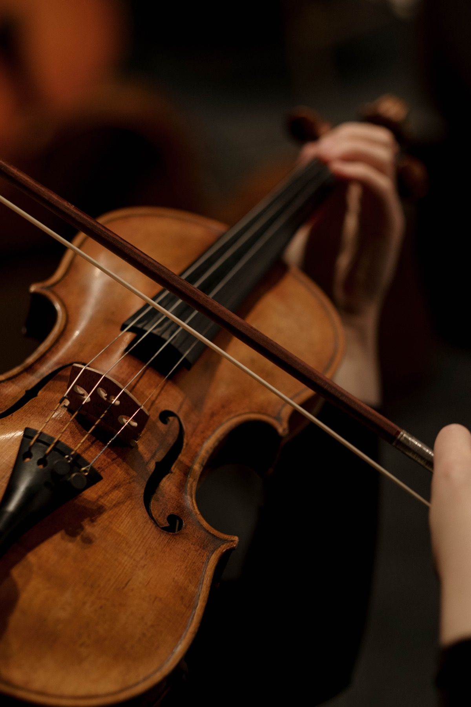
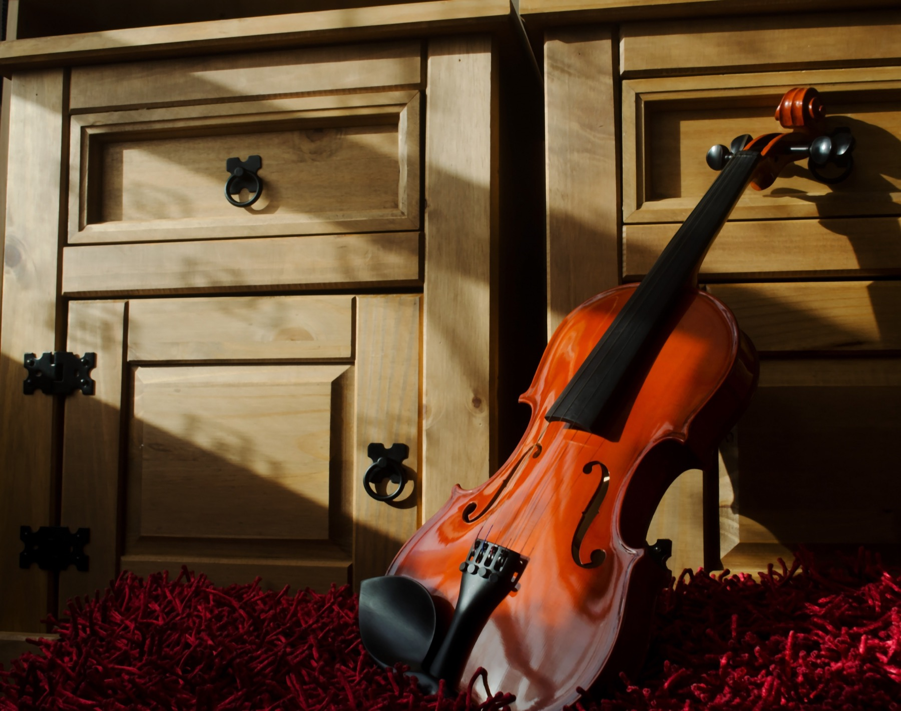
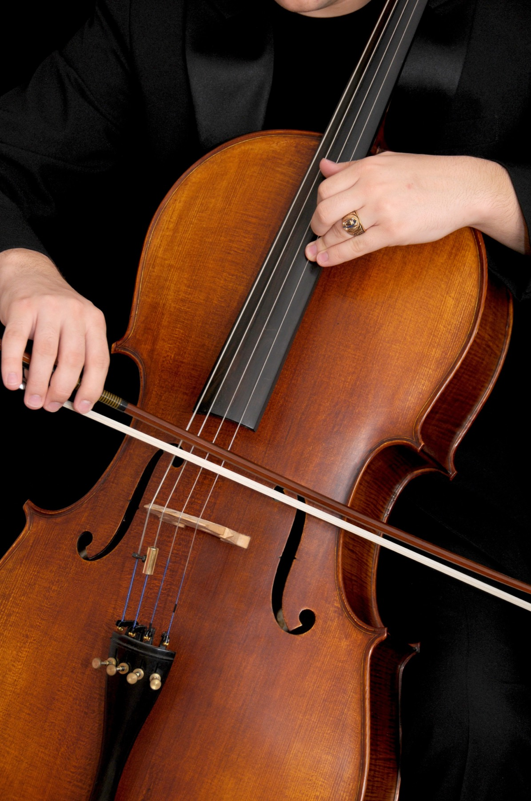
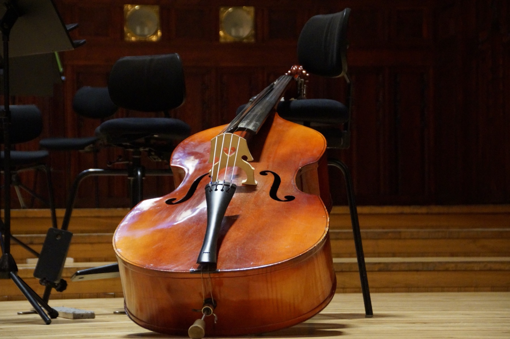
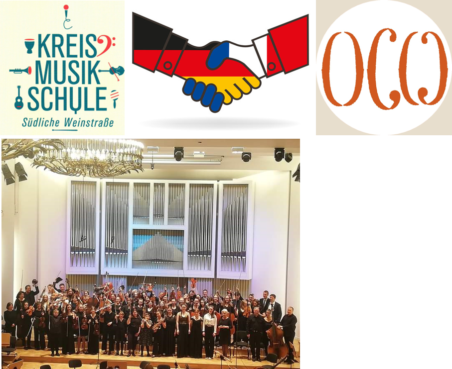

Das Ensemble
Das deutsch-französische Orchester
Musik, eine universelle Sprache, über Grenzen hinweg. — La musique, un langage universel, au-delà des frontières.
Das Ziel einer solchen Struktur ist, gemeinsam und nachhaltig die Freude am Spielen eines Instruments in einer freundlichen Atmosphäre zu teilen und auch die Offenheit gegenüber anderen Ländern — Deutschland, Polen … — zu fördern. Musik ist eine universelle Sprache!
Das deutsch-französische Orchester bietet daher das ganze Jahr über verschiedene Projekte an: Konzerte, Tourneen und Partnerschaften mit anderen internationalen Musikschulen. Diese Erfahrungen bringen eine persönliche, zwischenmenschliche, kulturelle und musikalische Bereicherung und schaffen so dauerhafte Freundschaften.
Der Verein OCW (Orchestre de Chambre de Wissembourg) wurde 2013 auf Initiative motivierter Schülerinnen und Schüler gegründet, umgeben von leidenschaftlichen Lehrkräften. Dieses Ensemble besteht — in Partnerschaft mit der Musikschule Landau seit 2021 und unter der Leitung von Marc Bender — aus rund fünfzig Laien- und Berufsmusikerinnen und -musikern aller Altersgruppen und Herkunft.
En français
L'objectif d'une telle structure est de partager ensemble et de façon pérenne le plaisir de jouer d'un instrument dans une ambiance conviviale, et d'encourager une ouverture vers d'autres pays. La musique étant un langage universel !

Künstlerische Leitung
Marc Bender
Geiger, ausgebildet in Straßburg, Stuttgart und London, heute bei der Philharmonie Baden-Baden. Er leitet das Orchester seit 2010.
Die Musikerinnen und Musiker
Die Register
Streicher, Bläser und Schlagwerk: Das Orchester vereint rund fünfzig Instrumentalistinnen und Instrumentalisten aus Frankreich und Deutschland. Die namentliche Liste nach Registern wird derzeit erstellt und hier veröffentlicht.




Der Verein
Ein Verein im Dienst der musikalischen Ausbildung
Der Verein Orchestre de Chambre de Wissembourg wurde im Dezember 2013 gegründet, um die musikalische Ausbildung weiterzuentwickeln. Er ist im Vereinsregister des Amtsgerichts Haguenau eingetragen.
Der Vorstand
- Marc BenderMusikalische Leitung
- William HegePräsident
- Adeline HirschlerSchatzmeisterin
- Gabrièle HegeSchriftführerin

Sie spielen ein Instrument?
Das Orchester nimmt in jeder Spielzeit neue Mitglieder auf — fortgeschrittene Laien wie Profis, aus Frankreich wie aus Deutschland. Schreiben Sie uns, wir nennen Ihnen die nächsten Probentermine.